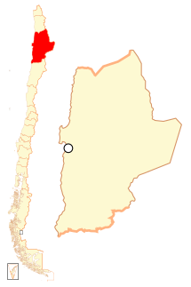
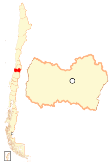

REGIÓN DE ARICA Y PARINACOTA. XV.
Situada en el extremo norte de Chile, esta
región se destaca por sus sitios arqueológicos precolombinos y la influencia cultural andina.
El Parque Nacional Lauca y el lago Chungará son destacados por su impresionante belleza natural. Arica,
su capital, es conocida por sus playas y un clima desértico suave
REGIÓN DE TARAPACÁ. I.
Ubicada en el norte de Chile, Tarapacá es famosa por su puerto libre, Iquique, que es un importante
centro comercial y de turismo. El desierto de Atacama ofrece paisajes espectaculares y oportunidades
para la exploración de geoglifos y salares. La región tiene una economía fuertemente ligada a la
minería y el comercio.
REGIÓN DE ANTOFAGASTA. II.
Esta región es conocida como la capital minera de Chile, especialmente por la extracción de cobre.
La Mano del Desierto y el observatorio Paranal son puntos de interés icónicos. Antofagasta combina
zonas desérticas con una extensa línea costera que ofrece hermosas vistas y playas.

REGIÓN DE ATACAMA. III.
Conocida por el Valle de la Luna y el Desierto de
Atacama, esta región es famosa por sus paisajes marcianos y cielos nocturnos entre los más claros del
mundo. Copiapó, la capital regional, es un centro histórico de la fiebre del oro en Chile. Atacama es
también un destino popular para el turismo astronómico.
REGIÓN DE COQUIMBO. IV.
Esta región es renombrada por su Observatorio La Silla,
parte del European Southern Observatory, y su producción de pisco. La Serena, su capital, ofrece una
mezcla de playas bellas y arquitectura colonial. El Valle del Elqui es famoso por su cielo estrellado
y como lugar de energías místicas.
REGIÓN DE VALPARAÍSO. V.
Esta región portuaria es famosa por su colorido centro histórico, cerros vibrantes y una intensa vida
cultural. Valparaíso es sede del Congreso Nacional de Chile y tiene una fuerte tradición naval. Viña
del Mar, parte de la misma región, es conocida por sus jardines, playas y el Festival Internacional
de la Canción.
REGIÓN DE METROPOLITANA. RM.
Como el centro neurálgico de Chile, Santiago es
una metrópolis vibrante con una oferta rica en cultura, gastronomía y entretenimiento. La región es
también un importante centro económico y educativo del país. Los alrededores de Santiago ofrecen
montañas y viñedos, ideales para escapadas de fin de semana.
REGIÓN DE O'HIGGINS. VI.
Esta región es fundamental en la producción de vino
chileno, destacando viñedos en el Valle de Colchagua y Cachapoal. Rancagua, su capital, es un centro
histórico de la minería y la agricultura. La región también ofrece hermosos paisajes naturales y
actividades rurales.

REGIÓN DEL MAULE. VII.
Maule es conocida por su agricultura, especialmente
viñedos, frutales y producción artesanal. Talca, su capital, juega un papel importante en la historia
de la independencia de Chile. La región también se destaca por su patrimonio natural en la Reserva
Nacional Altos de Lircay.
REGIÓN DE ÑUBLE. XVI.
Esta región, relativamente nueva, es reconocida por sus
festividades y tradiciones campesinas. Chillán, su capital, es famosa por su mercado artesanal y las
Termas de Chillán. La región ofrece una combinación de actividades agrícolas y turismo de aventura.
REGIÓN DEL BIOBIO. VIII.
Con un importante puerto en Concepción, Biobío es un
centro industrial y de educación superior. La región tiene una fuerte presencia de la cultura mapuche
y una rica historia de movimientos sociales. La diversidad de paisajes incluye playas, bosques y
montañas.
REGIÓN DE LA ARAUCANÍA. IX.
Esta región es el corazón de la cultura mapuche,
con una gran importancia en la reivindicación de derechos indígenas. Temuco, su capital, es un centro
de comercio y cultura. La región es famosa por su naturaleza prístina, incluyendo parques nacionales
como Conguillío.
REGIÓN DE LOS RÍOS. XIV.
Valdivia, su capital, es conocida por su historia,
su cerveza artesanal y su universidad. La región se caracteriza por sus múltiples ríos y humedales,
que ofrecen amplias oportunidades para el ecoturismo. Los Ríos es también un centro de estudios y
conservación ambiental.
REGIÓN DE LOS LAGOS. X.
Esta región es famosa por sus paisajes de lagos y
volcanes, siendo un destino clave para el turismo de aventura en Chile. Puerto Montt, su capital,
es un punto de partida hacia la Patagonia y los archipiélagos del sur. La región tiene una rica
tradición en la pesca y la acuicultura.
REGIÓN DE AYSEN. XI.
Conocida por su baja densidad poblacional y vastos
paisajes salvajes, es ideal para el ecoturismo y aventuras en la naturaleza. Coyhaique, su capital,
es un hub para explorar fiordos y glaciares. La Carretera Austral es la ruta escénica que atraviesa
la región.
REGIÓN DE MAGALLANES. XIII.
Punta Arenas, la capital, es la puerta de entrada a
la Antártica y a parques nacionales como Torres del Paine. Esta región es crucial para la investigación
científica y el turismo en la Patagonia. También destaca por su historia de exploración y la presencia
de comunidades indígenas como los Yaganes.
Volver